🎯 La stratégie en une phrase
« Le coursier de Netanya qui parle français et hébreu : prix fixe affiché, suivi en direct, espèces ou Bit. »
Concentrez-vous sur ce que les autres font peu : la poste, Super-Pharm, les documents, les objets de Yad2, les commerces sans livreur, les courses entre villes, et la confiance de la communauté francophone.
💪 Nos atouts
Vos arguments. Ne citez jamais de concurrent : parlez seulement de ce que HOP! fait.
| Départ direct | 1 course = 1 client : le livreur part tout de suite, le repas arrive chaud |
| Prix client | Prix fixe affiché avant de commander, rien d'autre |
| Commerçants | 0 % de commission sur les ventes, prix fixe par course |
| Ce qu'on livre | Tout : poste, Super-Pharm, documents, Yad2, clés… |
| Horaire | Programmé à l'heure près, et on prévient si on ne peut pas |
| Langues | Français et hébreu, dans l'application et au téléphone |
🖼️ Visuels de lancement prêts
Touchez une image pour l'ouvrir, puis enregistrez-la. Posts carrés pour Facebook et Instagram, stories pour Instagram et le statut WhatsApp, flyers A5 à imprimer (PDF). Les textes à copier sont plus bas et dans LANCEMENT.md.
👥 Clients
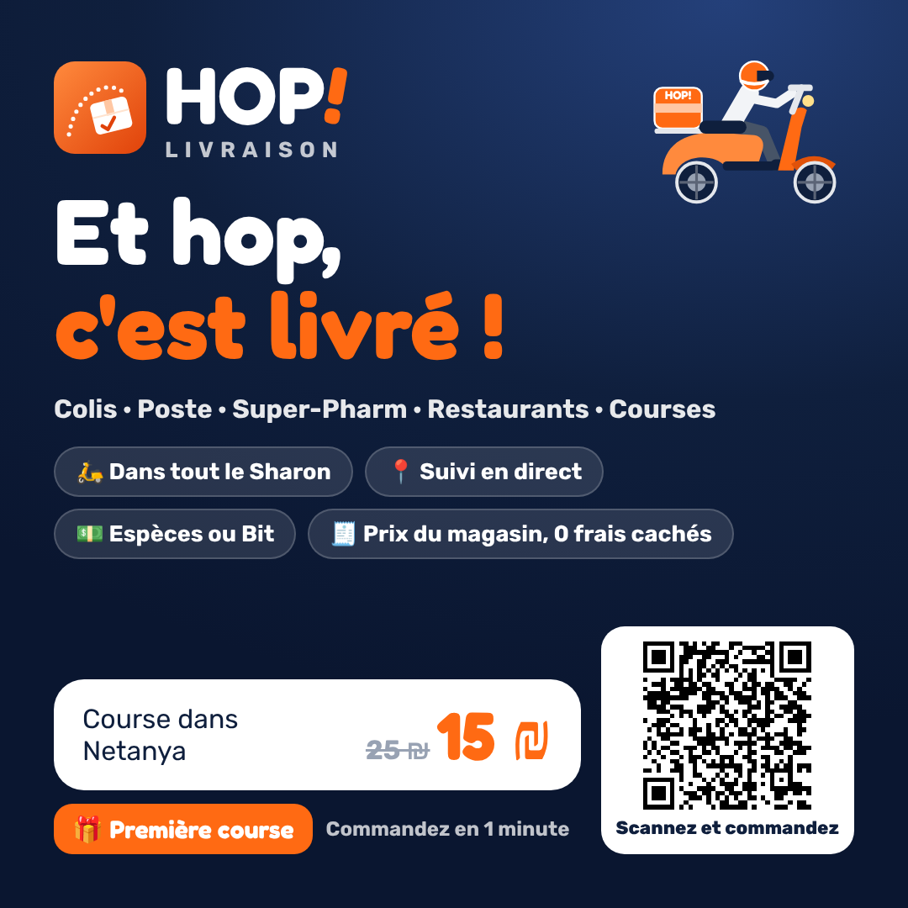
Post FR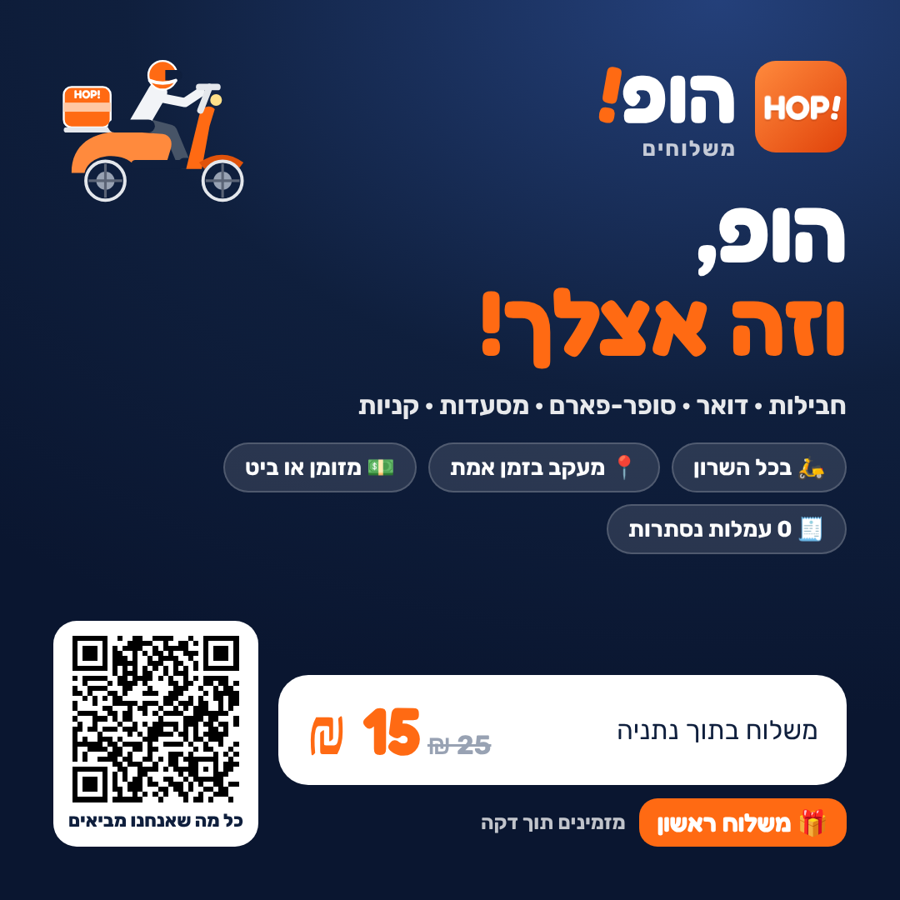
Post HE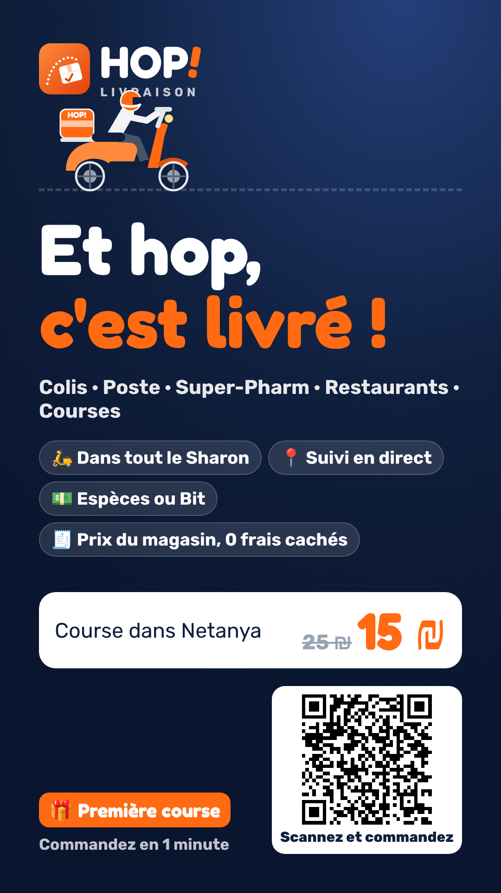
Story FR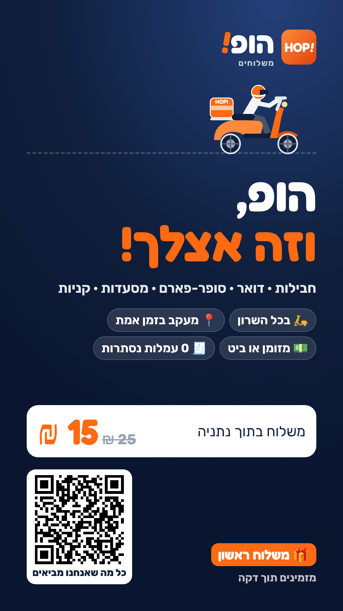
Story HE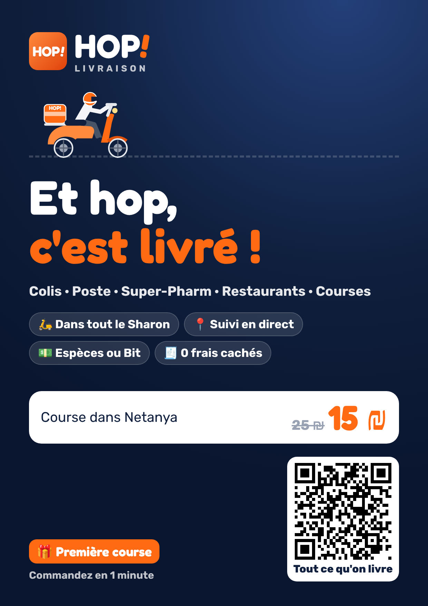
Flyer A5 FR (PDF)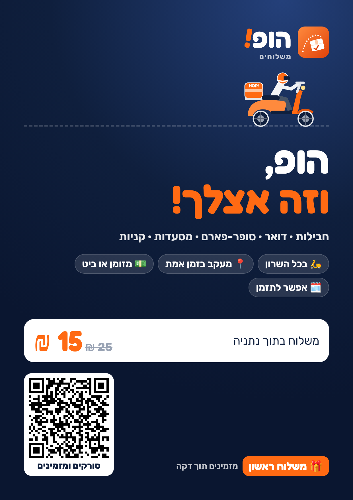
Flyer A5 HE (PDF)🏪 Commerces
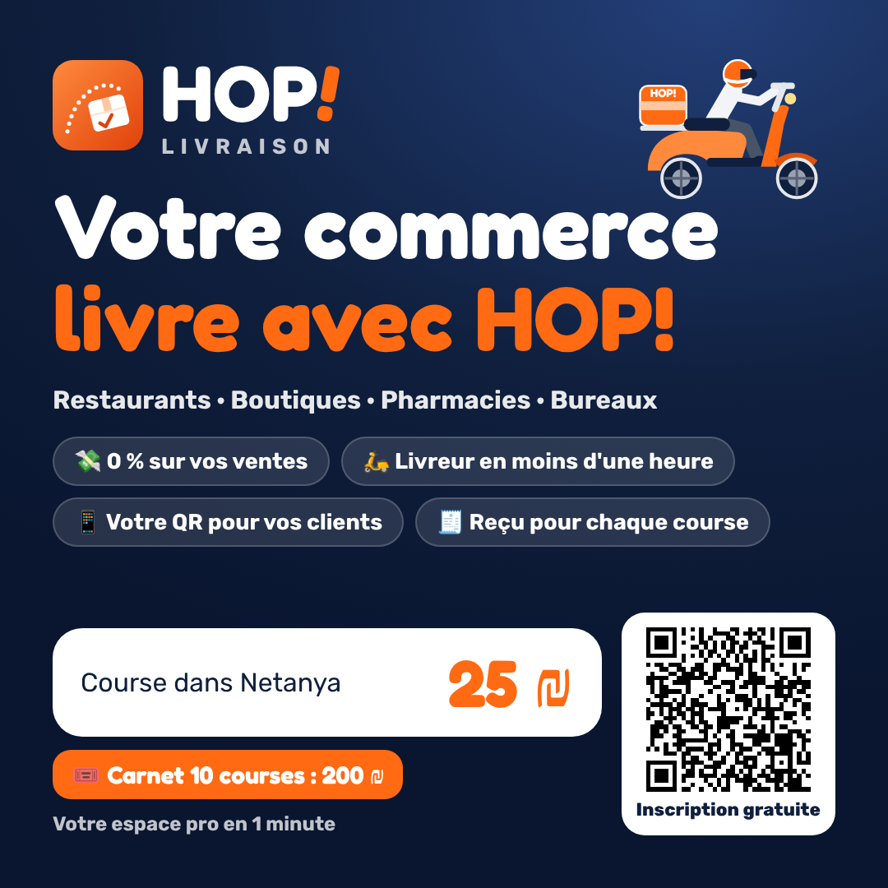
Post FR Post HE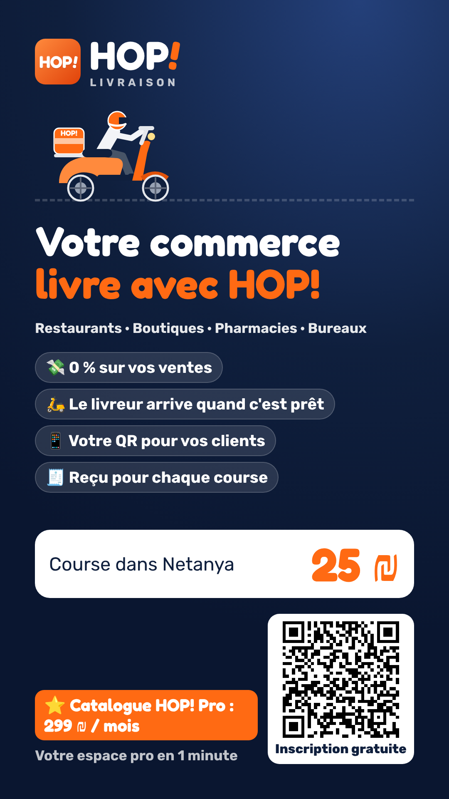
Story FR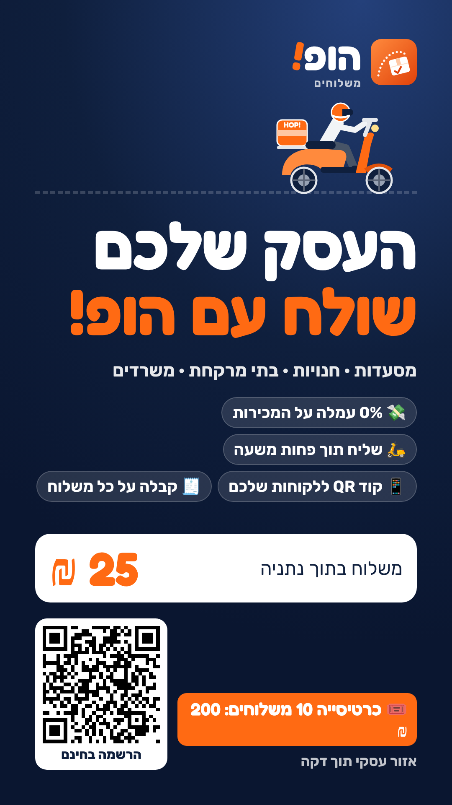
Story HE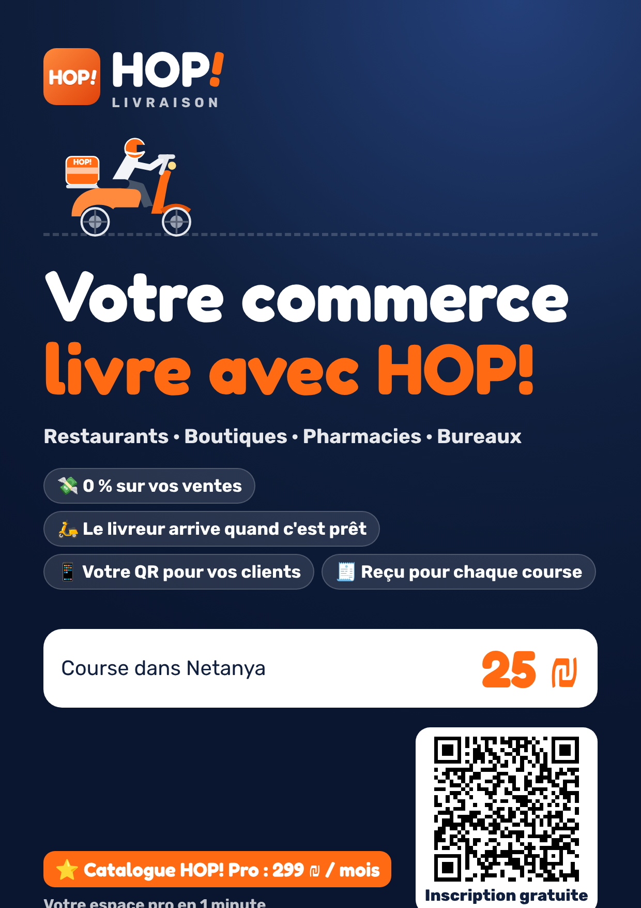
Flyer A5 FR (PDF)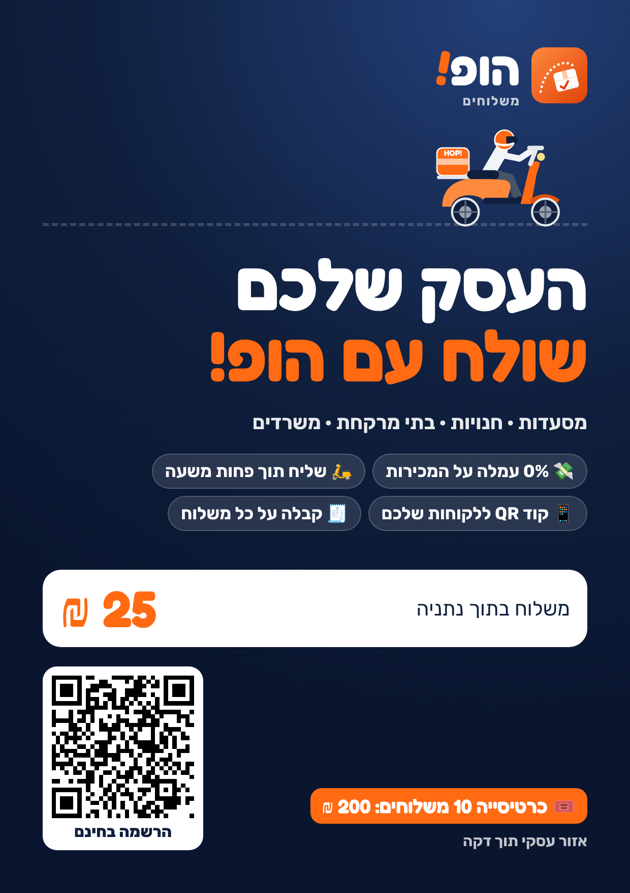
Flyer A5 HE (PDF)🛵 Livreurs
🔗 Votre lien et votre QR code
À mettre partout : statut WhatsApp, bio Instagram/Facebook, flyers, autocollant sur le scooter.
💰 Vos prix de lancement
Calculés automatiquement depuis config.js (petit colis). Raisonnables pour démarrer : moins chers qu'un coursier moto classique, assez pour être rentable sur des courses groupées. Appelez 2 ou 3 sociétés de coursiers (שליחויות) de Netanya pour comparer, puis ajustez base et perKm si besoin.
Offres déjà intégrées dans l'application
🗓️ Plan des 30 premiers jours (gratuit)
Semaine 1 — Se préparer
- Mettre votre numéro WhatsApp, votre numéro Bit et vos horaires dans
config.js. - Passer à WhatsApp Business (gratuit) : photo de profil avec le logo 🛵, description, message d'accueil automatique avec le lien de commande.
- Créer une fiche Google Business Profile (gratuit) « שליחויות נתניה · Coursier Netanya » : c'est ce qui fait apparaître votre numéro quand quelqu'un cherche « שליח נתניה » sur Google Maps.
- Faire 3 courses test avec des proches pour roder l'application, le suivi et le paiement Bit.
- Imprimer 100 flyers (bas de cette page) et un autocollant QR pour le scooter ou la voiture.
Semaine 2 — Les groupes (Facebook et WhatsApp)
- Rejoindre les groupes de la ville. Recherches à faire sur Facebook : « Netanya francophone », « Français de Netanya », « Olim Netanya », « Bons plans Israël », « נתניה », « יד שנייה נתניה », « אמהות נתניה », « עסקים בנתניה ».
- Lire les règles de chaque groupe. Si la pub est interdite, écrire d'abord à l'administrateur et lui offrir une course.
- Publier le post ci-dessous une fois par semaine maximum par groupe, de préférence le soir (20h–22h) ou le dimanche matin, avec une vraie photo de vous et de votre scooter : ça rassure beaucoup plus qu'un logo.
- Répondre à chaque commentaire dans l'heure. Chaque « merci, livraison parfaite ! » sous votre post vaut plus qu'une pub.
- Dans les groupes Yad2 / Marketplace : proposer « vendu ? je livre dans l'heure » en commentaire quand quelqu'un vend un meuble ou un objet (sans spammer).
Semaine 3 — Le terrain : 20 commerces en 5 jours
- Restaurants sans livreur (falafel, shawarma, pizzerias, boulangeries françaises, traiteurs de Shabbat) : « 0 % de commission sur vos ventes, prix fixe par course ».
- Pharmacies indépendantes, opticiens, pressings, fleuristes, imprimeries : ils ont tous des clients qui ne peuvent pas se déplacer.
- Avocats, notaires, comptables, agents immobiliers (surtout francophones) : documents à signer en aller-retour, clés à remettre.
- Laisser 20 flyers et un QR près de la caisse.
- Revenir une semaine plus tard avec un café : c'est la 2e visite qui signe.
Semaine 4 — Le bouche-à-oreille
- Après chaque course livrée, envoyer le message « livrée » (bouton 💬 Client) : il contient le code de parrainage du client.
- Demander un avis Google aux clients contents.
- Publier des stories/Reels courts : la queue à la poste « pendant que vous restez au frais », Netanya → Ra'anana en accéléré, un client content.
- Objectif réaliste : 20 à 30 courses par semaine à la fin du mois, et 3 commerces réguliers.
Les moments forts de l'année à ne pas rater
- Pourim : livraison de michloah manot (énorme demande, plusieurs adresses = arrêts supplémentaires).
- Roch Hachana, Pessah : cadeaux, paniers, fleurs, courses de dernière minute.
- Chaque vendredi : fleurs et gâteaux avant Shabbat, plats des traiteurs.
- Périodes de soldes en ligne (novembre) : explosion des colis à la poste et dans les points relais.
✍️ Messages prêts à copier
Les prix et le lien sont remplis automatiquement. Touchez « Copier » puis collez dans le groupe ou sur WhatsApp.
👥 Grandir avec des livreurs partenaires
- Envoyez le lien d'inscription (coursier.html) avec l'annonce de recrutement ci-dessus.
- Chaque livreur s'inscrit et accepte ses engagements : permis valide, assurance, statut d'עוסק, responsabilité des colis et de l'argent, commission hebdomadaire.
- Vous vérifiez ses documents (photos sur WhatsApp) puis vous le validez dans l'onglet Livreurs.
- Les courses que vous ne prenez pas apparaissent chez les livreurs : le premier qui accepte la prend. Vous pouvez aussi attribuer une course à un livreur précis.
- Le livreur encaisse le client et vous verse sa commission chaque semaine (onglet Paiements de la semaine).
- ⚠️ Faites relire les engagements des livreurs par un avocat ou un comptable avant de recruter : statut d'indépendant, assurance de transport de marchandises, responsabilité en cas de perte.
📏 Suivre ce qui marche
- Demandez à chaque nouveau client « Comment vous nous avez connus ? » et notez-le dans le message pour le client (espace coursier).
- Chaque dimanche : regardez l'onglet Facturation (courses, chiffre, qui revient). Gardez ce qui marche, arrêtez le reste.